On the oldest shelf in the library there is a gap, and Professor Hooten dusts it every morning. It’s for “the book that hasn’t been written yet”. Foxy-Lox has a plan: write that book, and put it in the gap for Christmas without Hooten seeing. There’s just one problem. Professor Hooten sees everything. A crew, a map, a rehearsal and a plan that goes wrong in the middle: this is a heist where nothing gets stolen.
35 printed pages · 8.8 MB · A4 or US Letter. Download PDF · Open PDF to printOpens in a new tab. Use the PDF viewer's Print control.
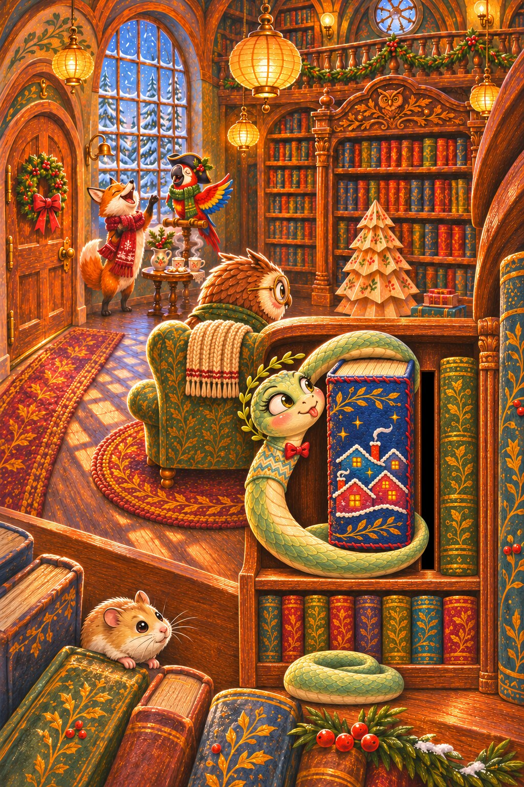
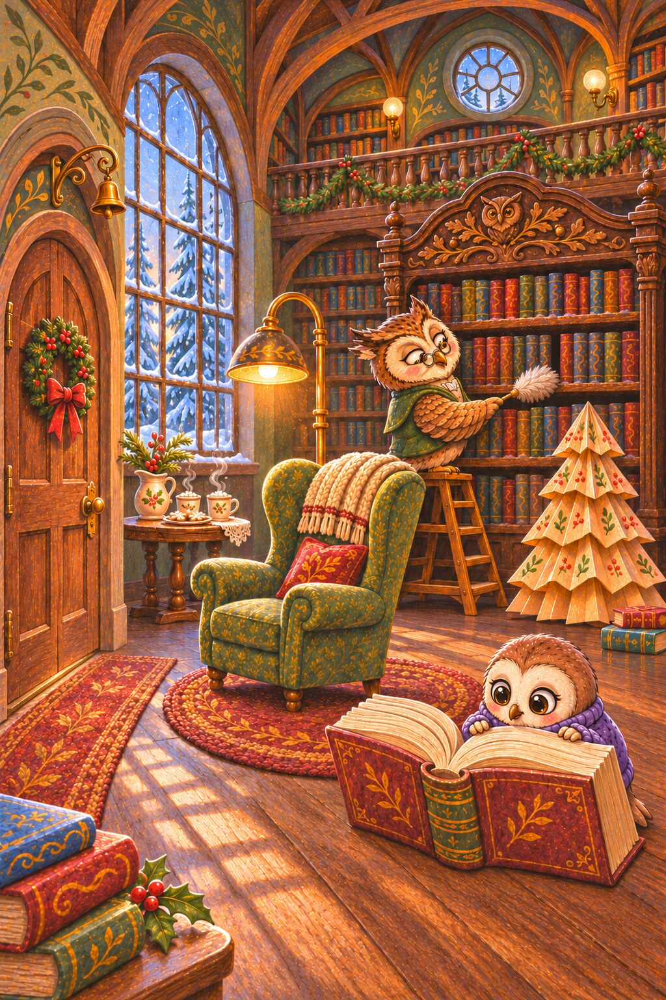
Page 1 of 34
Chapter One: The Gap
Booklava lived in the library, and so she knew its secrets.
She knew which stair creaked, which lamp flickered, and which dictionary was best for sleeping in. She knew that every morning, before anybody came, Professor Hooten dusted every single shelf.
And she knew that on the oldest shelf, the First Shelf, right behind his armchair, there was a gap.
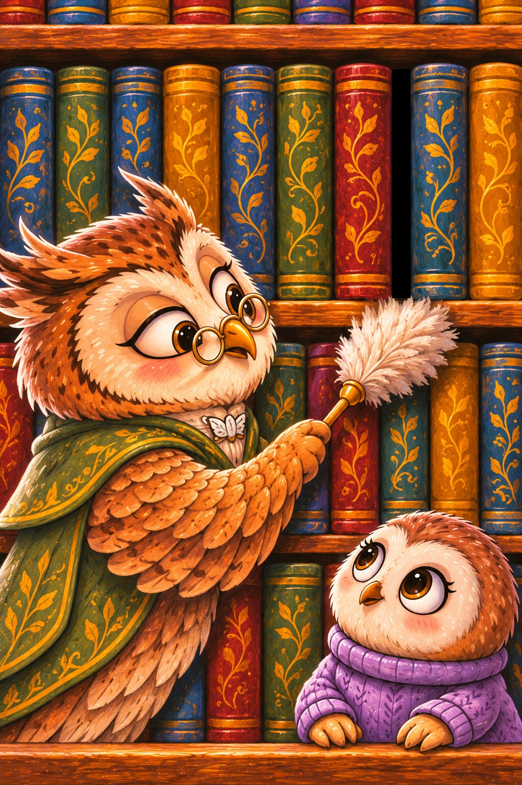
Page 2 of 34
It was a narrow gap, just wide enough for one thin book. And every morning, Professor Hooten dusted it, very carefully, as if something were already there.
“What goes in the gap?” Booklava asked him one December morning.
Hooten smiled. “That space,” he said, “is for the book that hasn’t been written yet.”
And he would not say another word about it.
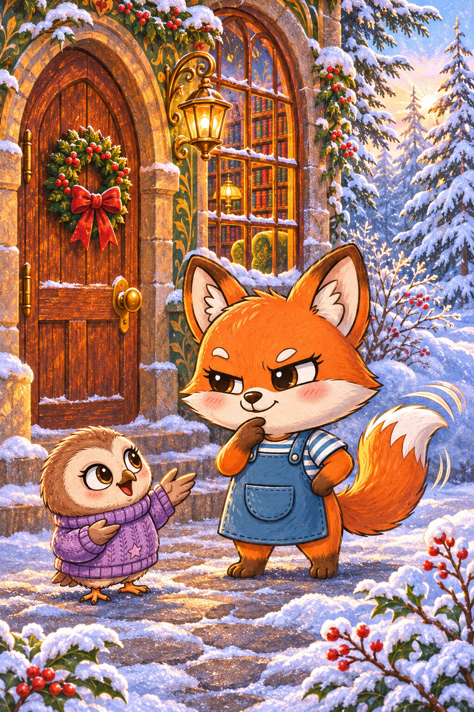
Page 3 of 34
Booklava told Foxy-Lox, because Foxy-Lox was the cleverest person she knew. Foxy-Lox had won the Hide-and-Seek-and-Solve Championship three years running.
Foxy-Lox’s eyes narrowed. Her tail swished.
“Then we write it,” she said. “A book about the village, by everybody in the village. And we put it in the gap for Christmas. Without him seeing.”
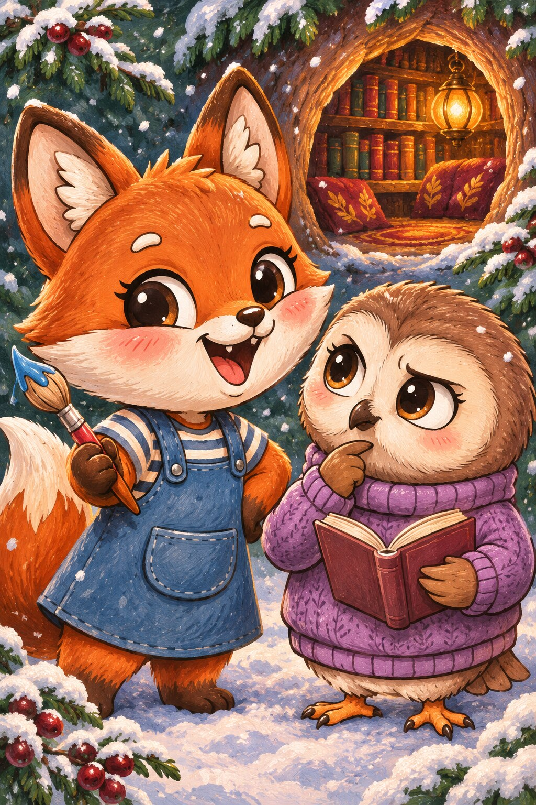
Page 4 of 34
“You can’t,” said Booklava. “Nobody does anything in that library without him seeing.”
“Nobody,” said Foxy-Lox, “has ever tried with a crew.”
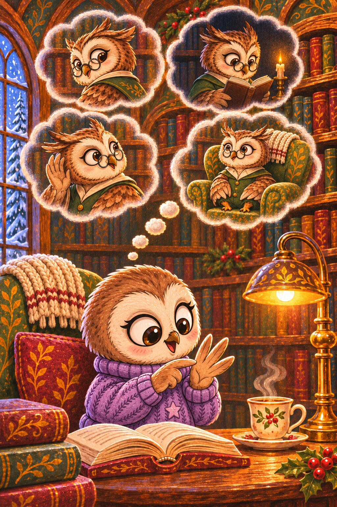
Page 5 of 34
Booklava counted the problems on her wingtips.
“One. He can turn his head almost all the way round. Two. He can read in the pitch dark, so turning the lights off is no use. Three. He can hear a page turn from the other end of the library. Four. He never leaves, and he never naps. Not in the daytime. Not ever.”
Foxy-Lox grinned. “Then it’s the best puzzle I’ve ever had.”
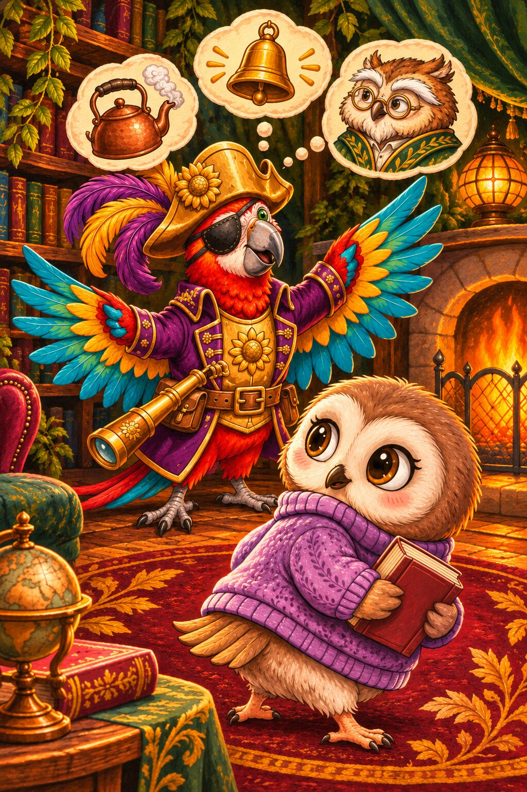
Page 6 of 34
Chapter Two: The Crew
The first person Foxy-Lox visited was Polly Roger.
“I hear you can copy any sound,” said Foxy-Lox.
Polly Roger fluffed her feathers. Then, without opening her beak very much, she made the sound of a kettle whistling, a door bell jingling, and Professor Hooten saying, “Hmm, now, let me see.”
It was so like Hooten that Booklava turned round to look for him.
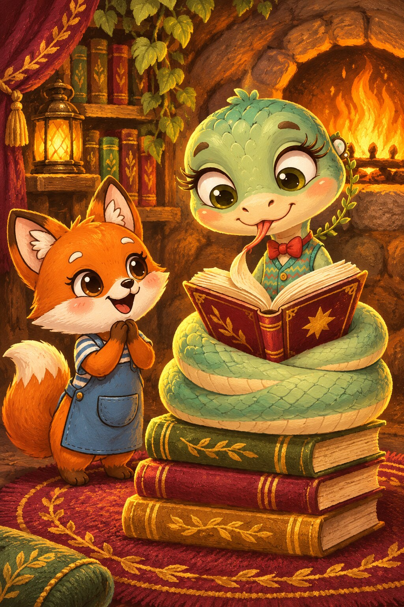
Page 7 of 34
The second was Cynthia Book-Smart.
“I have no feet,” said Cynthia, “so I never make a floorboard creak. I can turn a page with my tongue without a whisper. And I know where every book in that library lives, because I have read every one of them.”
“Even the dictionaries?” said Booklava.
“Twice,” said Cynthia.
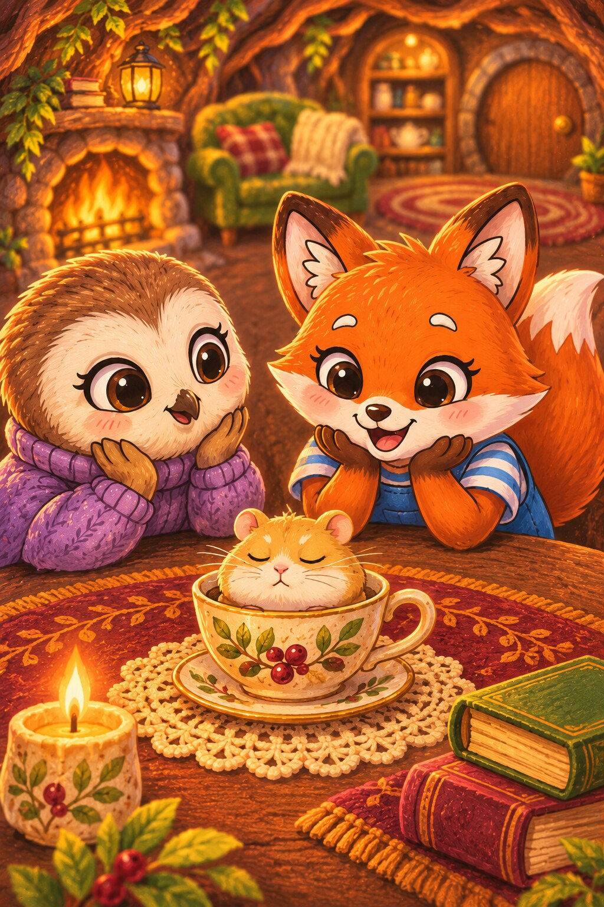
Page 8 of 34
The third was Ham-and-Cheese.
“Why me?” he squeaked. He was sitting in a teacup.
“Because you’re the smallest person in the village,” said Foxy-Lox. “And because you can hold perfectly still.”
Ham-and-Cheese held perfectly still to show her. It was very impressive.
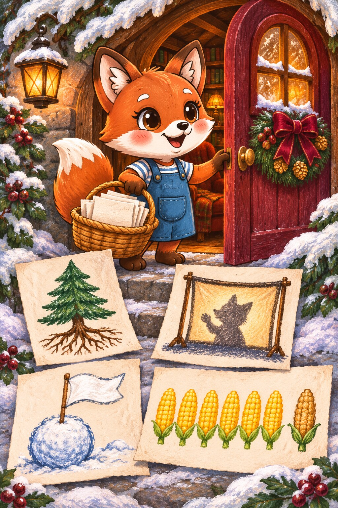
Page 9 of 34
Then came the book.
Foxy-Lox went from door to door with a basket of blank pages. “One page each,” she said. “Something good that happened this year. Write it or draw it. Don’t tell Hooten.”
Nutmeg drew the tree that wouldn’t come. Vincent painted his shadow show. Sub-Zero drew a snowball with a white flag on it. Corgi-on-the-Cob drew six cobs of corn, and then, after some thought, a seventh.
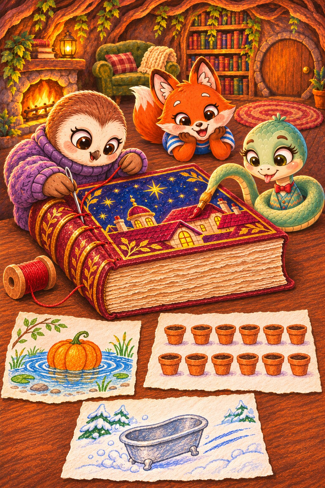
Page 10 of 34
The pages kept coming. Shelly-Pop drew a pumpkin floating on a pond. Snack-Spector wrote about twelve pots of daffodils that hadn’t come up yet. Biscuit-Bouncer drew a bathtub going extremely fast.
When they had collected them all, Booklava stitched the pages together with red thread, and Cynthia painted the cover with the tip of her tail.
It was a beautiful book. It had forty-seven pages.
It was very, very fat.
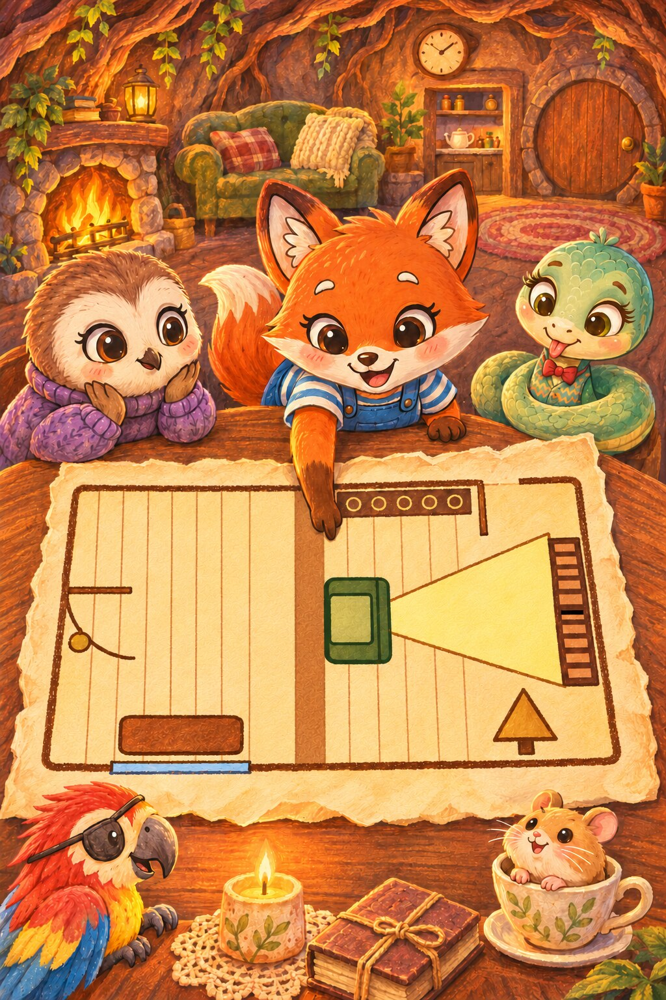
Page 11 of 34
Chapter Three: The Plan
In Foxy-Lox’s den, the crew gathered round a big map of the library, drawn by Cynthia from memory. Every shelf. Every lamp. Every floorboard.
“Here’s Hooten’s armchair,” said Foxy-Lox, tapping it. “And here, right behind it, is the First Shelf, and the gap.”
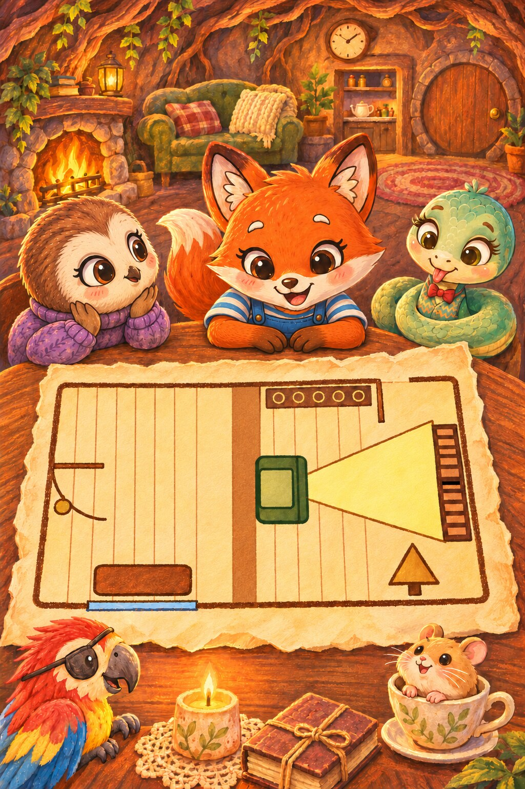
Page 12 of 34
“Problem one,” said Foxy-Lox. “The head.”
She turned to Booklava. “You’re an owl. How far round can an owl’s head go?”
“A long way,” said Booklava. “But not all the way. There’s always a bit right behind us that we can’t see without turning our whole body.”
Foxy-Lox drew a narrow slice of pie on the map, behind Hooten’s armchair. “The Blind Spot,” she said. “And look what’s in it.”
The First Shelf.
“He sits with his back to the very shelf we need,” said Cynthia slowly. “How careless of him.”
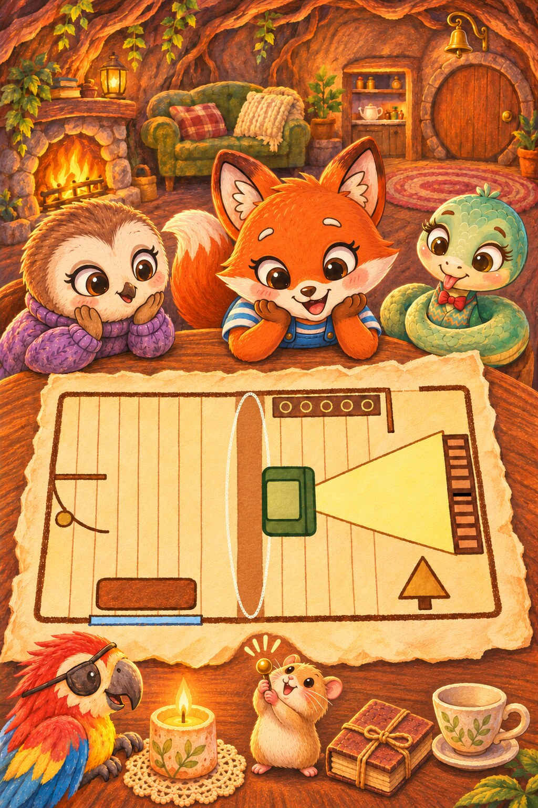
Page 13 of 34
“Problem two: his ears.”
The library door had a brass bell above it that jingled whenever it opened. “Ham-and-Cheese climbs inside the bell,” said Foxy-Lox, “and holds the clapper.”
The ninth floorboard from the door creaked like an old gate. “Cynthia goes round it,” said Foxy-Lox. “She has no feet anyway.”
“I take that as a compliment,” said Cynthia.
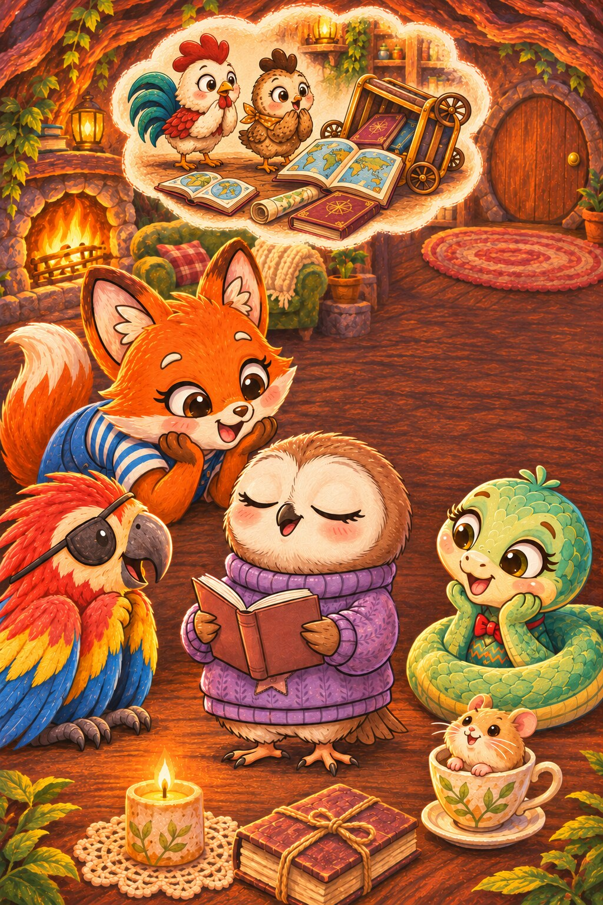
Page 14 of 34
“Problem three. He never leaves and he never naps.” Foxy-Lox held up one claw. “But when he’s thinking very hard about something, he hums. Booklava, you told me so.”
“Like a radiator,” said Booklava. “Hmmmmm.”
“And when he hums, does he hear anything else?”
Booklava thought about it. “No. Nothing. Last week the twins knocked over a whole trolley of atlases while he was humming, and he didn’t even blink.”
“Then your job,” said Foxy-Lox, “is to ask him the hardest question in the world.”
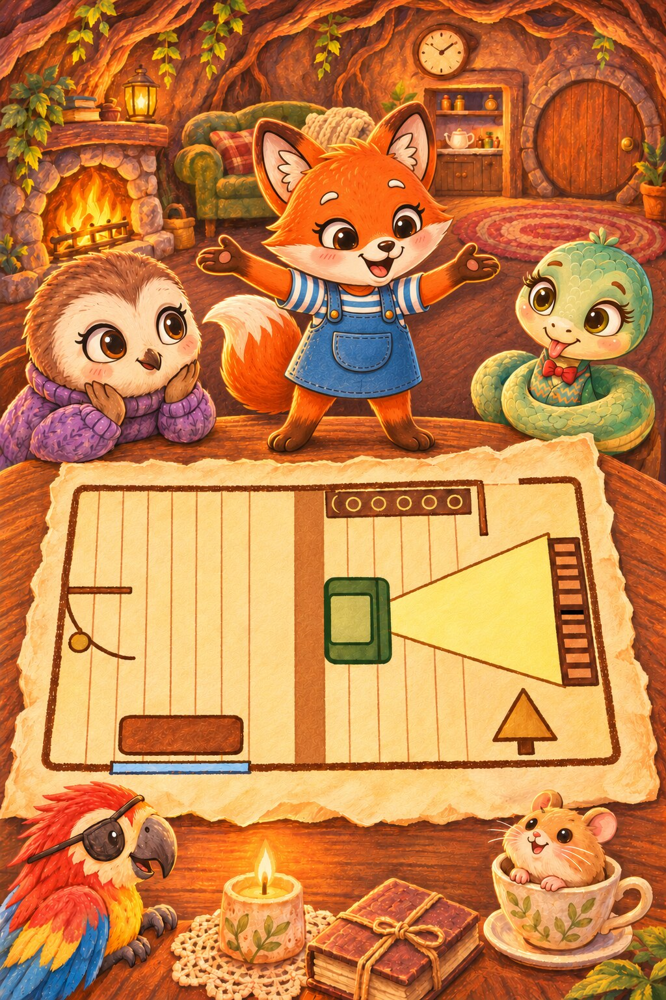
Page 15 of 34
“Problem four. He can see in the dark, so there’s no point waiting for night.”
Foxy-Lox smiled her widest smile. “So we’ll do it in broad lamplight. On Lantern Evening, when the library’s full of people and lanterns and singing. Polly and I will be carol singers, by the door. Loud ones.”
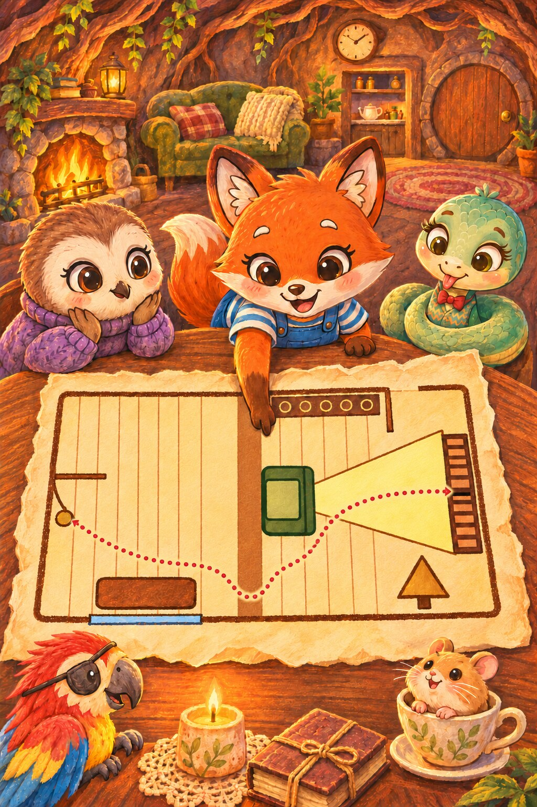
Page 16 of 34
She went through it, step by step, tapping the map.
“Polly and I sing at the door. Ham-and-Cheese holds the bell. Cynthia slides in with the book. Booklava asks the question. Hooten hums. Cynthia goes round the ninth board, into the Blind Spot, up the First Shelf, book in the gap, and out again. Thirty seconds.”
“And if anything goes wrong?” asked Ham-and-Cheese.
“Then,” said Foxy-Lox, “we make it up.”
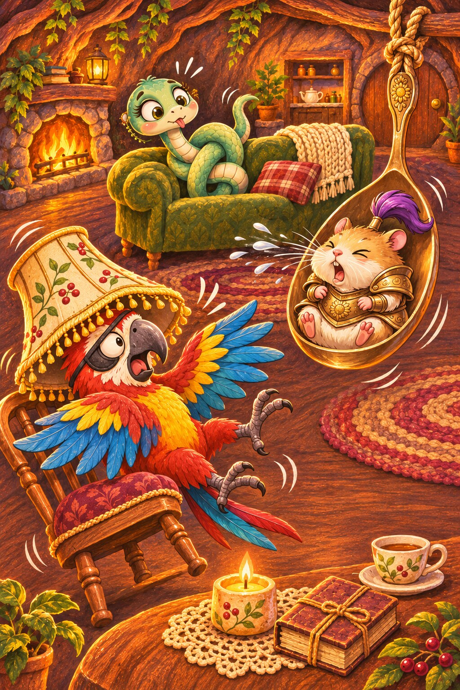
Page 17 of 34
Chapter Four: The Rehearsal
They practised in Foxy-Lox’s den. Polly Roger played Professor Hooten, with a lampshade on her head for turning.
The first time, Ham-and-Cheese sneezed inside the bell. (It was a spoon, for practice, but still.)
The second time, Polly turned her lampshade head so far round that she fell off her chair.
The third time, Cynthia tied herself in a knot behind the sofa, and it took twenty minutes to untie her.
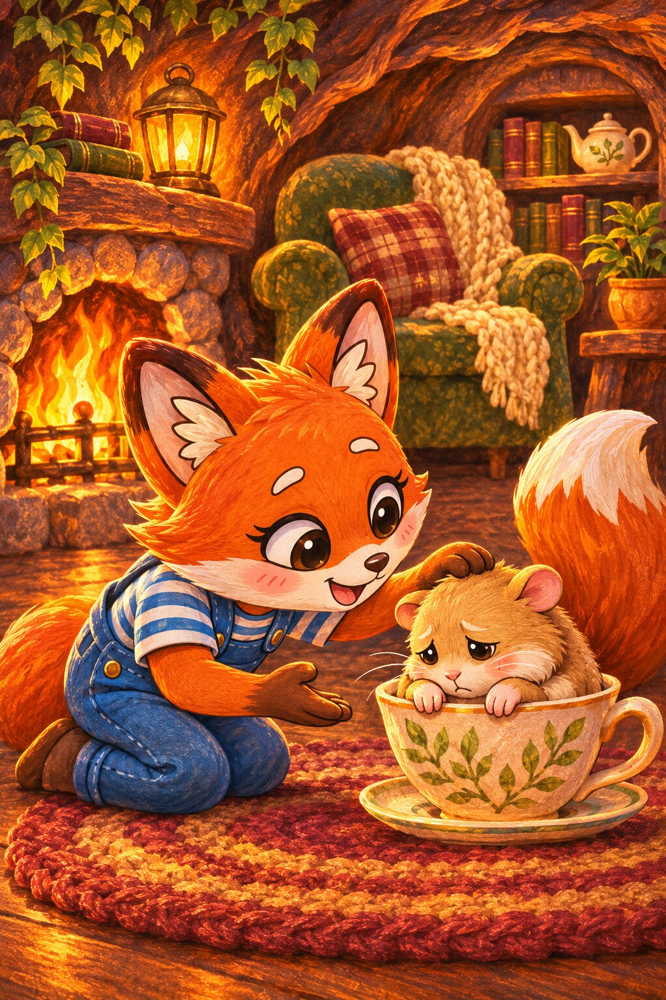
Page 18 of 34
“It’s not working,” said Ham-and-Cheese.
“It’s a rehearsal,” said Foxy-Lox. “It isn’t supposed to work. It’s supposed to go wrong here, so it doesn’t go wrong there.”
Page 19 of 34
Booklava practised her question.
“It has to be so hard he hums for at least a minute,” she said. She had been thinking about it all week. “Professor, if there are so many stars that you can’t count them, in every direction, for ever and ever, why is the sky dark at night? Why isn’t it bright everywhere?”
Polly Roger, in the lampshade, went quiet. Then she said, in Hooten’s voice, “Hmm. Hmmmmm.”
“That’s the one,” said Foxy-Lox.
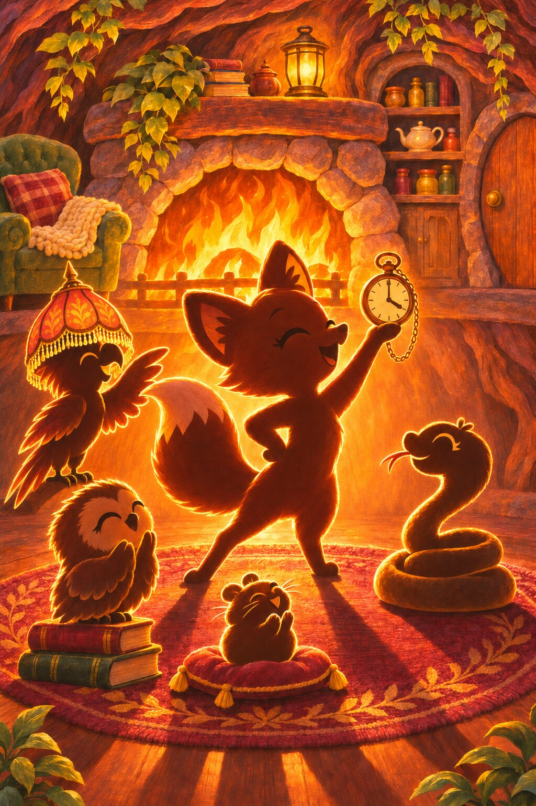
Page 20 of 34
The fourth time, nobody sneezed, nobody fell off a chair and nobody tied themselves in a knot.
Twenty-eight seconds.
“Tomorrow,” said Foxy-Lox.
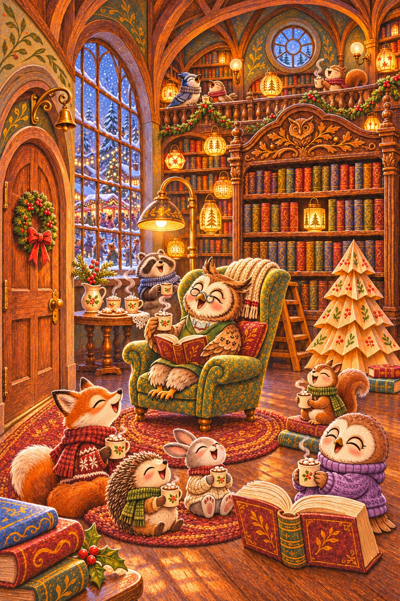
Page 21 of 34
Chapter Five: Lantern Evening
On Lantern Evening, the library glowed. Lanterns hung from every bookcase. The paper tree glittered. The hall was full of friends drinking cocoa and singing.
And in his armchair, with his back to the First Shelf, sat Professor Hooten, looking at everybody at once.
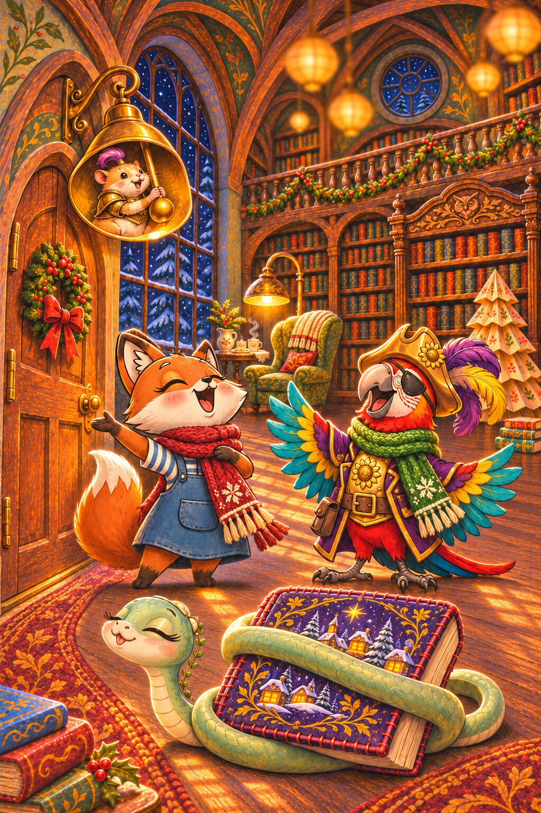
Page 22 of 34
Foxy-Lox and Polly Roger stood by the door in scarves, singing as loudly as they could.
Ham-and-Cheese was already inside the brass bell, both paws round the clapper.
The door swung open. The bell did not ring. And through the gap, quiet as a ribbon, slid Cynthia Book-Smart, with the fat book wrapped in her coils.
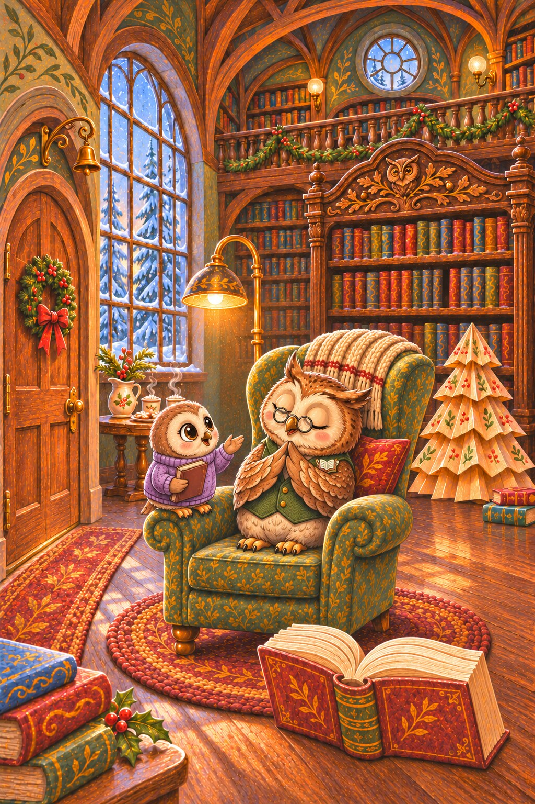
Page 23 of 34
Booklava hopped up onto the arm of Hooten’s chair.
“Professor,” she said. “If there are so many stars that you can’t count them, in every direction, for ever and ever, why is the sky dark at night?”
Hooten’s eyes went very wide.
“Ah,” he said. “Now that is a very good question. Hmm.” He closed his eyes. “Hmmmmmmmm.”
The Hover-Hum had begun.
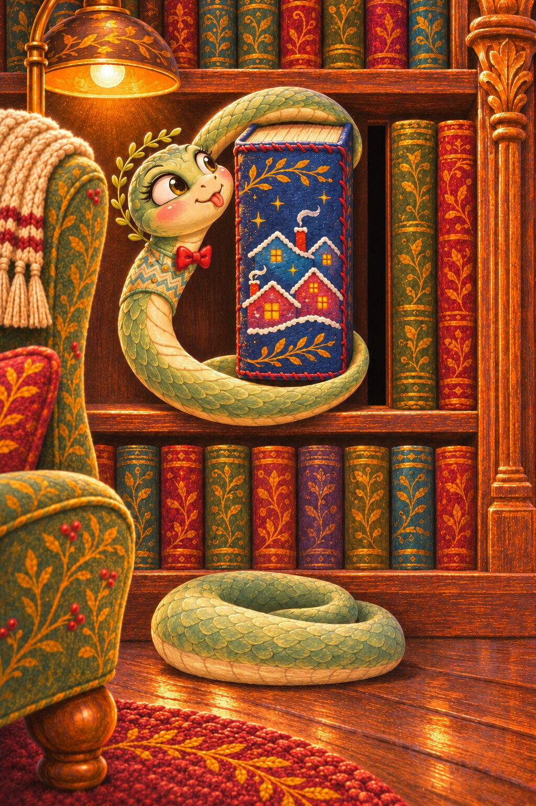
Page 24 of 34
Cynthia slid round the ninth floorboard. She slid into the Blind Spot behind the armchair. She slid up the First Shelf, along the oldest books, to the gap.
She lifted the fat book, all forty-seven pages of it, toward the gap.
It did not fit. It was not even close.
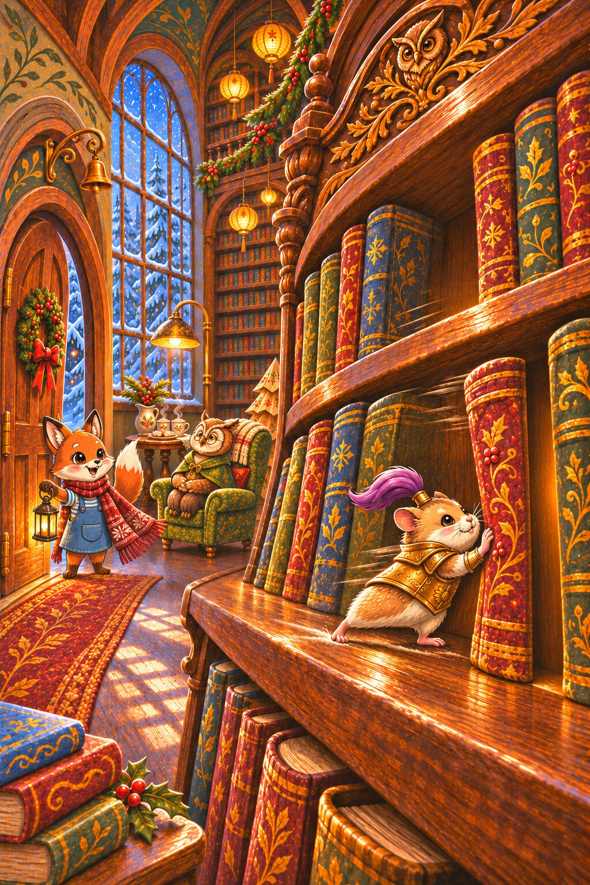
Page 25 of 34
By the door, Foxy-Lox saw Cynthia freeze. She saw the book. She saw the gap.
She sang the next line louder, and made a tiny signal with her tail: Go.
Ham-and-Cheese let go of the clapper (the door was shut now; the bell was safe) and dropped to the floor. He ran along the skirting board, behind the armchair and up the First Shelf.
Then, one by one, he began to push every single book on the shelf along. Just a whisker each. Very, very quietly.
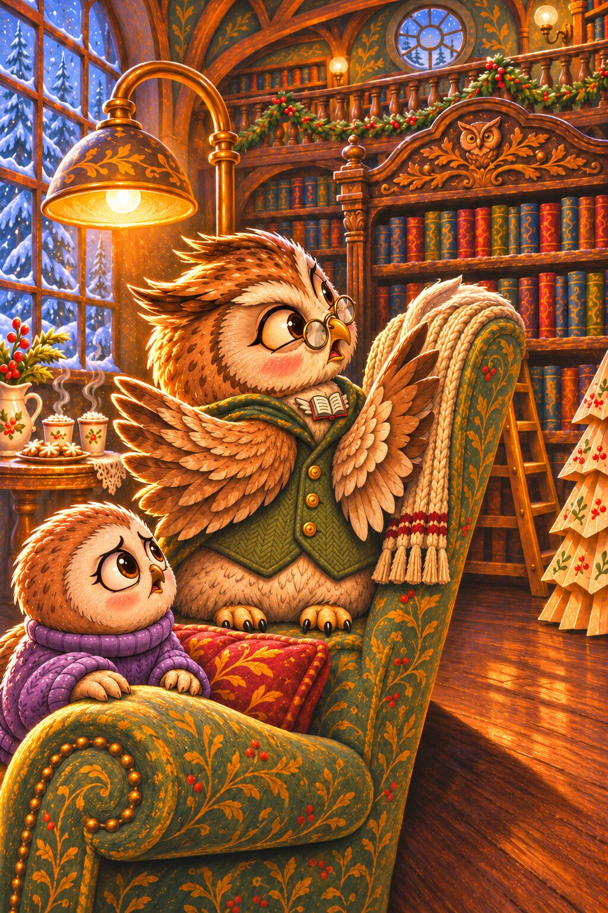
Page 26 of 34
The hum stopped.
“Booklava,” said Professor Hooten, opening his eyes. “I think I may have it. You see, the light from—”
His head began to turn.
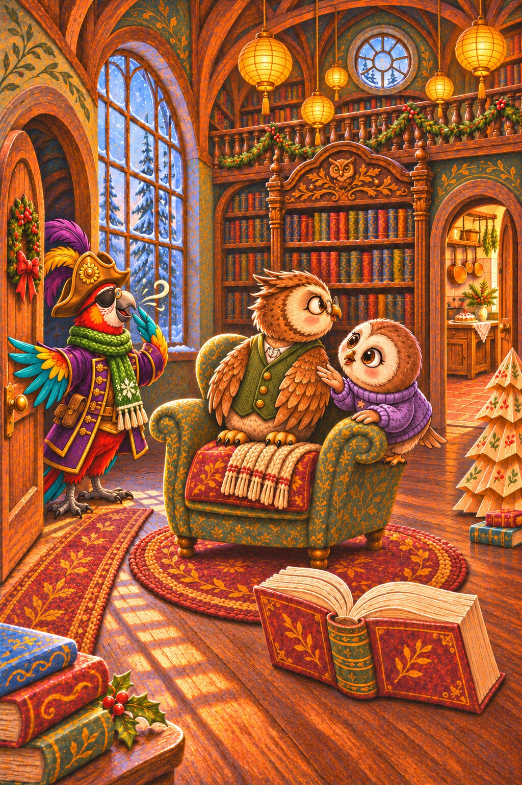
Page 27 of 34
From the direction of the library kitchen came the sound of a kettle, whistling, louder and louder, as if it were about to boil dry.
Hooten’s head swung the other way. “My kettle?”
“It’s fine, Professor,” said Booklava quickly. “But you didn’t finish! Why isn’t the sky bright everywhere?”
By the door, Polly Roger stopped being a kettle and went back to being a carol singer.
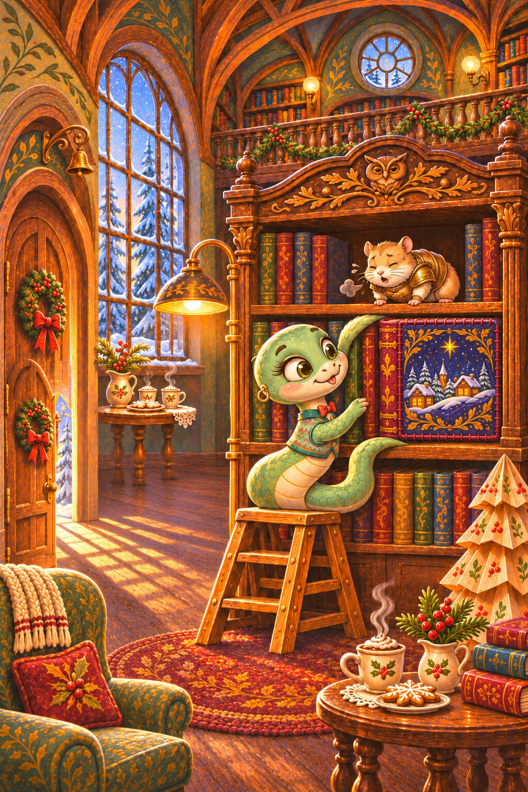
Page 28 of 34
Ham-and-Cheese pushed the last book along. The gap was a little wider now. Just wide enough.
Cynthia slid the fat book in. It fitted. Snugly. As if it had always belonged there.
She slid down, round the ninth board, and out through the door, and Ham-and-Cheese rode out on the end of her tail.
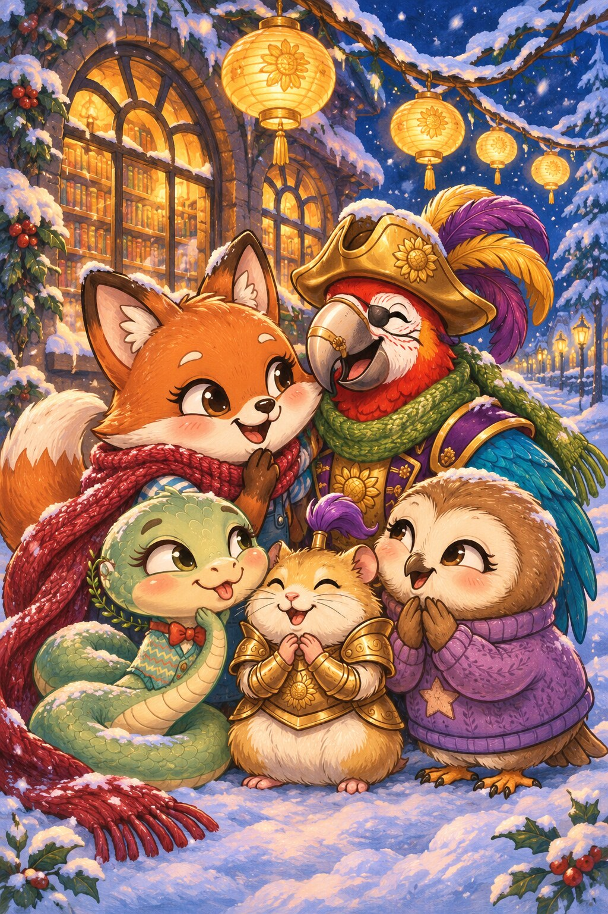
Page 29 of 34
Outside, in the snow, under the lanterns, the crew could not stop grinning.
“Did he see?” whispered Ham-and-Cheese.
“Nobody sees everything,” said Foxy-Lox.
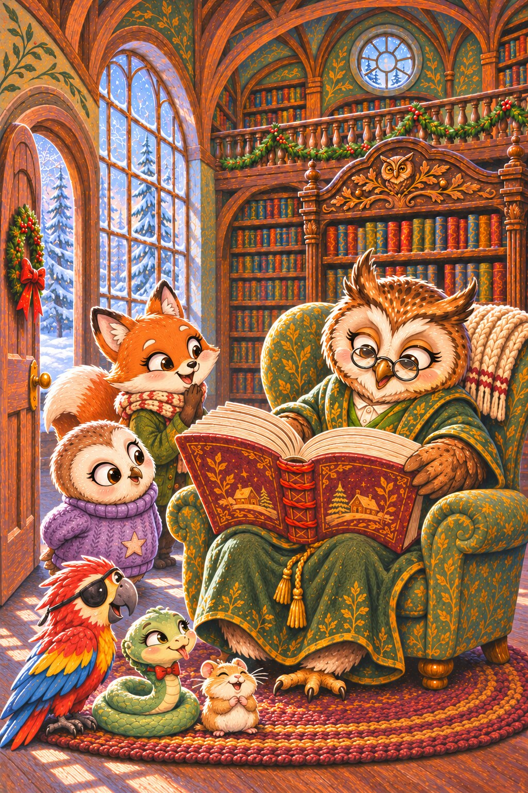
Page 30 of 34
Chapter Six: Volume Two
The next morning, the crew happened to visit the library. All five of them. At once. By chance.
Professor Hooten was in his armchair, wearing his reading glasses, with the fat book open on his knees. He was wiping his eyes with the corner of his robe.
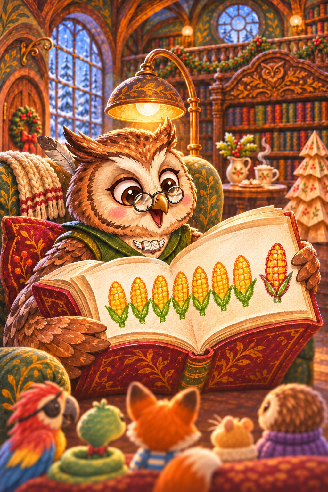
Page 31 of 34
“Listen to this,” he said, and read them Corgi-on-the-Cob’s page about six cobs of corn, and then a seventh. Then he read Shelly-Pop’s, and Snack-Spector’s, and Nutmeg’s, and Biscuit-Bouncer’s.
“Forty-seven pages,” he said. “Everybody in the village. It’s the book I’ve been waiting for.”
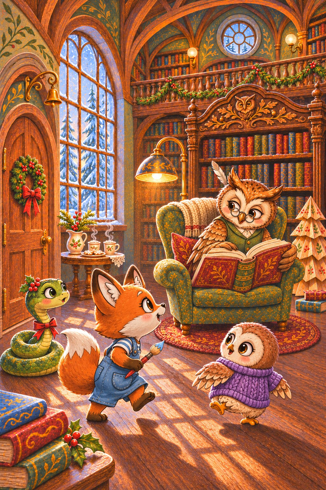
Page 32 of 34
“Of course,” he added, “I saw you.”
The crew went very still.
“I can see in the dark, so I can certainly see in lamplight. And Polly, you do my kettle better than my kettle does.” He looked at Foxy-Lox over his glasses. “As for the Blind Spot... why do you think I put the First Shelf behind my chair? Every library needs one place where people can leave something without being watched.”
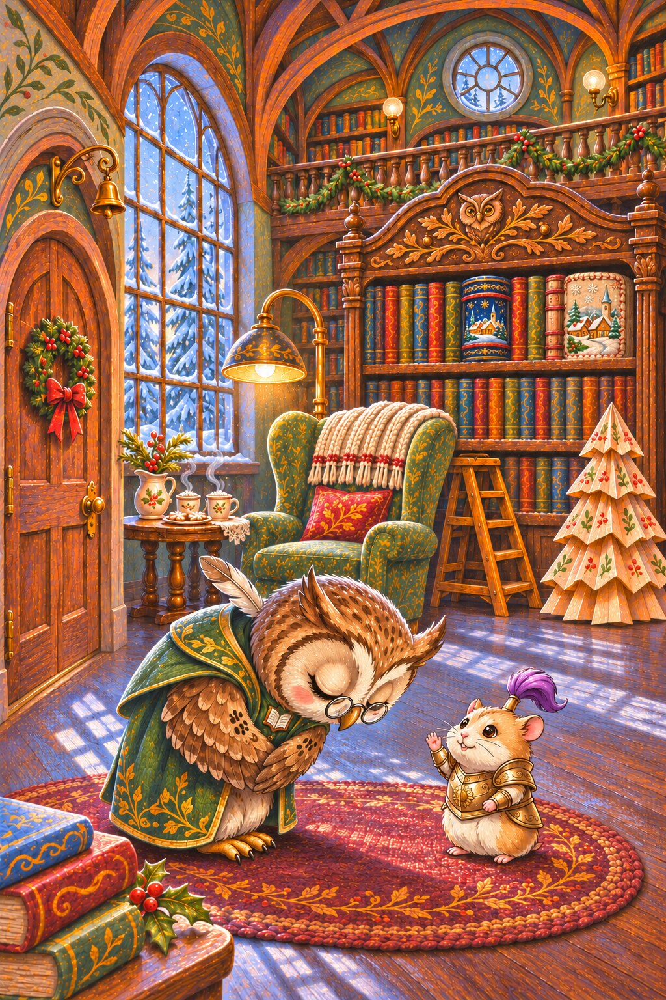
Page 33 of 34
“So you knew,” said Foxy-Lox. “All of it.”
“Nearly all of it,” said Hooten. “There’s one thing I didn’t see.” His head turned slowly along the First Shelf. “Who moved every single book on this shelf exactly one whisker to the left?”
Ham-and-Cheese put up a very small paw.
Professor Hooten bowed to him, deeply, the way he bowed to nobody. “Then you,” he said, “are the best of the lot.”
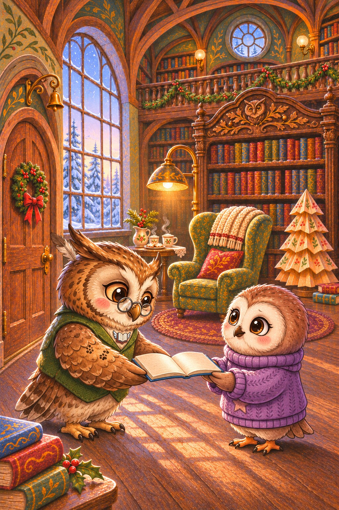
Page 34 of 34
He reached into his robe and brought out a new book, thin and empty, with a plain cover.
“This one is for next year,” he said. “There’s room for it next to the first one. Volume Two.”
Booklava took it. Then she remembered. “Professor, you never finished. Why is the sky dark at night?”
“Because the light from most of the stars hasn’t got here yet,” said Hooten. “It’s still on its way.”
He looked at the empty book in her wings, and smiled. “Like most of the best stories.”
The end · Thank you for reading
Share another story
A SnackPack original story, free to read online or print.